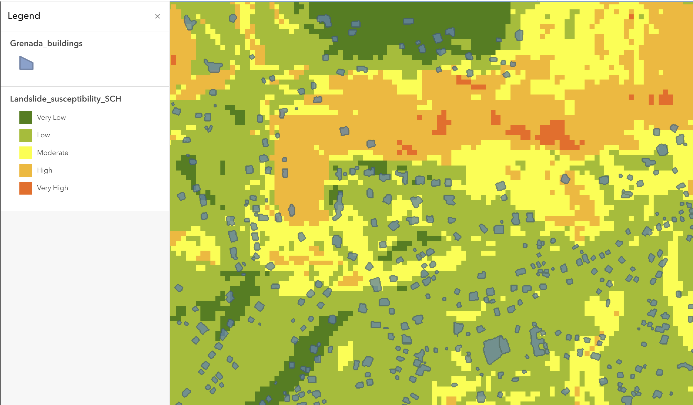
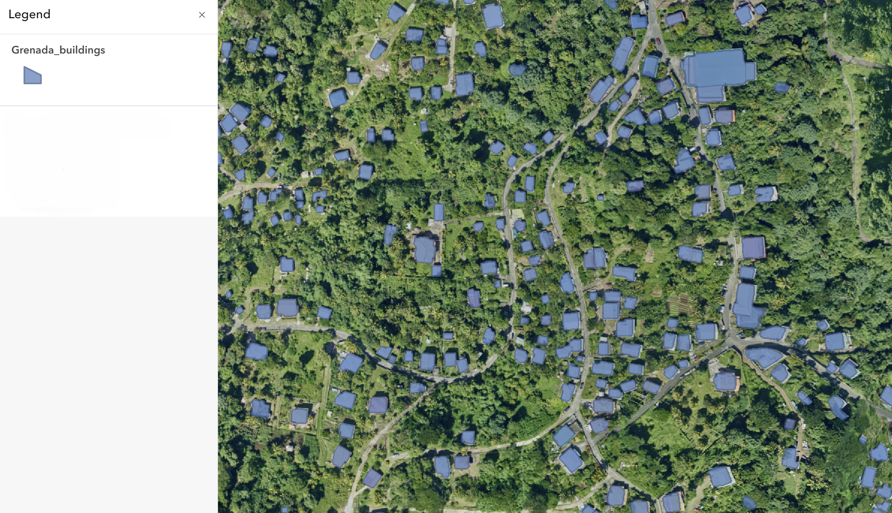
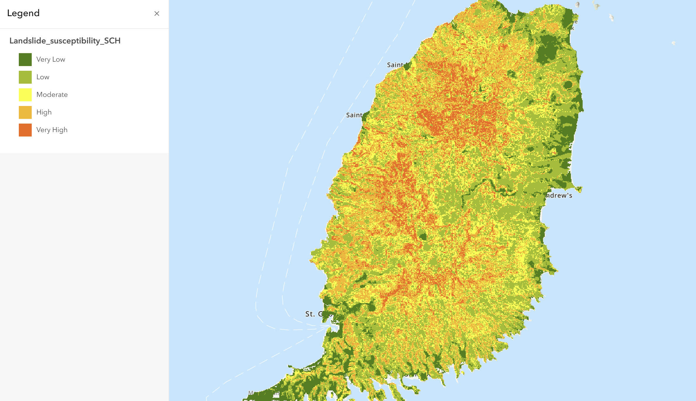

Deep learning-based building extraction and raster-based landslide susceptibility analysis combined in ArcGIS Online to identify potentially exposed structures in Grenada.

This project demonstrates a complete ArcGIS Online workflow that combines object extraction, raster analysis, and interactive web mapping. The main goal was not only to generate outputs, but to show how multiple geospatial layers can be integrated into a clear risk-focused result.
Aerial TIFF imagery was processed in ArcGIS Online, and a pretrained deep learning model was used to detect building footprints within the study area.
Landslide susceptibility was generated through raster analysis using elevation, soil types, land use, and distance to rivers.
The extracted building layer was overlaid with the susceptibility surface to identify structures located in moderate to very high risk zones.
The final results were published as a web map and an Instant App to support exploration of the analysis outputs at multiple scales.
The first stage focused on extracting building footprints from aerial imagery. This step demonstrates the GeoAI component of the workflow and shows the detected structures before combining them with the susceptibility analysis.

The raster analysis classified the island into five susceptibility classes ranging from very low to very high. This output provided the spatial risk context that was later compared with the building layer.

The final map compares building locations with susceptibility classes at a closer scale. This is the most important output of the workflow because it translates the analysis into a practical infrastructure risk perspective.
This project shows how GeoAI outputs and raster-based environmental analysis can be integrated into a single web-based workflow. The final result is not only a map, but a structured spatial decision-support output that connects imagery interpretation, risk classification, and interactive communication.